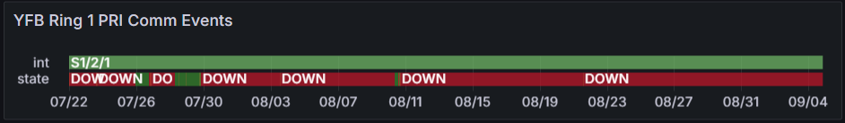

Weekly Highlights 20240828-20240904
8/28 - YWG WRE-C Faulted
- 8/28 07:59 - YWG WRE-C Faulted with SEs 28, 29, 52, 53, 59; Control Powered and restored to Normal at 8/28 09:18
- 8/29 13:49 - YWG WRE-C Faulted with SEs 29, 52, 53, 59; Control Powered and restored to Normal at 8/29 14:28
8/28 - DX1 to Backup for Frequency Change
- 8/28 23:35 - GUS Switchover - SM9
- SZ1 to Primary / DX1 to Backup
to support frequency changes-- ref LIR 855094224
From RTX:
Galaxy 14 satellite is being deorbited and we want to change the DX1 tracking frequency prior to Galaxy 14 maneuvers.
8/29 - ZLC PCU-C Replaced
- 8/24 20:29 - ZLC PCU-C failed causing ZLC WRE-C and ZLC Ring 2 down hard -- ref LIR 853762624; tech reports burning smell...
- 8/28 03:03 - ZLC WRE-C restored to Maintenance after PCU-C replacement...
- 8/29 03:37 - ZLC PCU-C down again / Ring 2 comms offline; ref LIR 856064524
- 8/29 14:41 - ZLC PCU-C reconfigured and WRE-C
returned to Maintenance; restored to
Normal at 8/29 15:30
- ZLC WRE-C - 8/24-8/29 - ZLC PCU-C failed -- ref LIR 853762624
9/1 - MTP WREs Restarted (Possible Power Outage)
- 9/1 16:52 - MTP WREs return to Maintenance Mode (possible power outage)
- 9/3 22:14 - MTP WREs restored to Normal Mode
9/3 - DX1 RFU M&C Blue Screen
- 9/3 07:51 - DX1 GUS received SE 205 RFU FDA Failure concurrent with SE 1 RFU M&C fault, but no fault at this time; SEs rescinded at 9/3 07:52
- 9/3 08:12 - DX1 GUS received SE 1 RFU M&C Fault which did not rescind...
- 9/3 14:21 - DX1 GUS Control Powered from Backup to
address SE 1 RFU M&C Comm Fault which did
not clear:
engineer said that the RFU M&C had blue screened-- ref LIR 858383624; restored to Backup at 9/4 00:18
9/3 - CM1 GUS ACS Routers Control Powered
- 9/3 14:27 - CM1 GUS ACS-A Control Powered to address Copy Error Log issues -- ref LAD 852853824; restored at 9/3 14:33 (~6m 15s)
- 9/3 15:02 - CM1 GUS ACS-A Control Powered again by mistake; restored at 9/3 15:16 (~14m 21s)
- 9/3 16:01 - CM1 GUS ACS-B Control Powered ; restored at 9/3 16:17 (~15 40s)
9/4 - BR1 to Backup for Intrusive Maintenance
- 9/4 12:59 - GUS Switchover - S15
- CM1 to Primary / BR1 to Backup
to perform intrusive S/A PM, C1 KPA Mini-Fan replacement and cleaning-- ref LIR 845023324 - 9/4 18:28 - BR1 GUS Shutdown and Control Powered for intrusive PM; restored to Backup at 9/4 18:58
Various Comm Impacts
* Only captures major / long-term comm outages
Mexico Comms
- 8/28 12:26 - MTP Ring 1 comms down hard -- OFFLINE; line cleared at 8/28 14:46 (~2h 19m)
- 8/28 17:34 - MTP Ring 1 comms down hard -- OFFLINE; line cleared at 8/28 21:24 (~3h 49m)
- 8/29 07:04 - MSD Ring 1 comms down hard -- OFFLINE; line cleared at 8/29 08:26 (~1h 22m)
- 9/1 17:54 - Ring 1 Mexico comms down hard
- 9/2 19:31 - MMX Ring 2 comms down hard -- OFFLINE...
- 9/3 21:34 - All Ring 1 Mexico comms cleared (~2d 3h)
Other Sites
- 8/29 05:35 - BRW Ring 1 ALT / Ring 2 PRI comms down hard; line cleared at 8/30 08:03 (~1d 2h)
9/2 - MMX Ring 2 Down Hard
- 9/2 19:31 - MMX Ring 2 comms down hard...
SSM-WAAS-066 Circuits Outstanding
- OTZ - Following circuits delivered
/ SA'd -- Circuit Validation
target week of
9/16/2024
- Ring 1 PRI to ZAU - FTIH-WS-053504
- Ring 2 PRI to ZLA - FTIH-WS-053508
- Ring 2 ALT to ZLA - FTIH-WS-053509
- BRW - Ring 2 ALT to ZLA -
FTIH-WS-053531
- 5/23 17:35 - BRW Ring 2
ALT comms down
hard --
ISR 0521-0090; ref LIR 802755624 - Router replacement did not clear issue; Troubleshooting will continue week of 9/16...
- 5/23 17:35 - BRW Ring 2
ALT comms down
hard --
YFB Ring 1 PRI
- 7/29 17:01 - YFB Ring 1 comms flapping then down hard at 7/29 19:10; loopback testing at 7/30 04:06...
- 7/31 05:08 - YYR Ring 1 down hard + loopback testing impacting YYR Ring 1 and YFB Ring 1 to troubleshoot YFB Ring 1 comms down since 7/29; last event for YYR Ring 1 cleared at 7/31 09:41 (~16389 seconds) -- YFB Ring 1 still down hard...
- 8/10 04:09 - YFB Ring 1 comms UP temporarily; started flapping again at 8/10 08:27 then down hard at 8/10 11:29...

List of current offline WREs
List of current offline WREs -- ref WAAS Status Monitor
All Depot shipments to Mexico are halted until the customs process can be finalized
- MMX WRE-C - 5/15-... - Processor failed and could not be restored
- MPR WRE-B - 5/3-... - Inits failing -- looks like a bad freq std; due to shipping issues, there is no spare Freq Std and no ETA to recover WRE-B...
5/11/23-... - MX Ring 2 Satcom Upgrade
MX WAAS Sites comm upgrades in progress:
- 6/5 - Troubleshooting at ZLA-Tijuana shows 4 of 5 circuits have a telco issue localized to Tijuana that must be resolved by FTI; for the MSD circuit, Tijuana could see a loop from ZLA, but ZLA could not see the loop locally -- possible cable issue at ZLA
- Frequentis coordinating with SENEAM at TJX to complete end-to-end testing from remote site to TJX
- After successful testing to TJX; comms should come up at ZLA (if not, coordinate with FTI Harris)
- MMX Ring 2 is currently up, but zero UDP packets are coming through
- MMD Ring 2 is currently up, but zero UDP packets are coming through

Major Events


Core I/F Dashboard

Comm Events

Mexico Comm Status